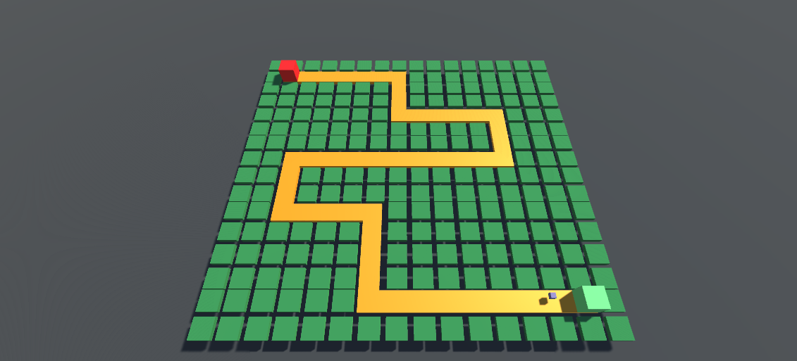
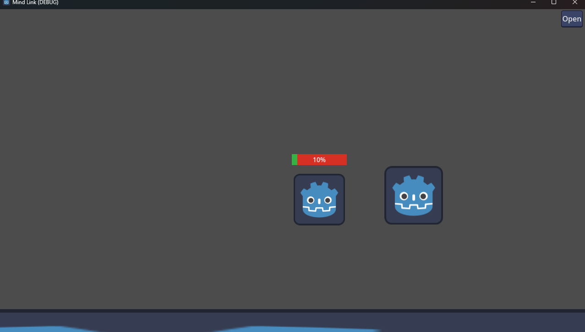
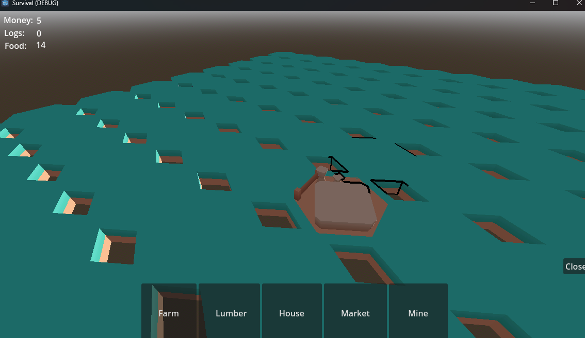
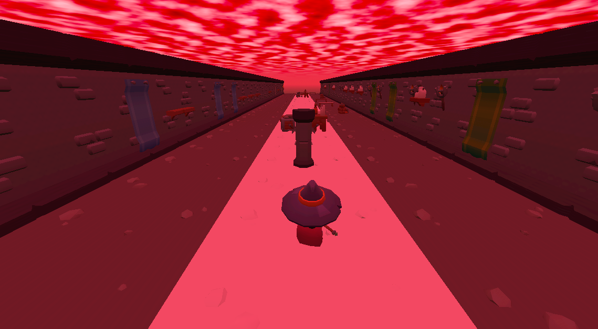
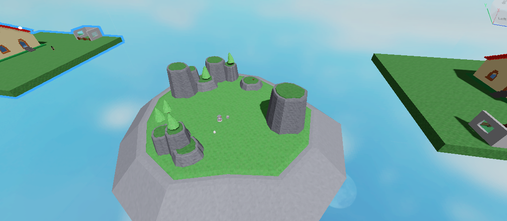
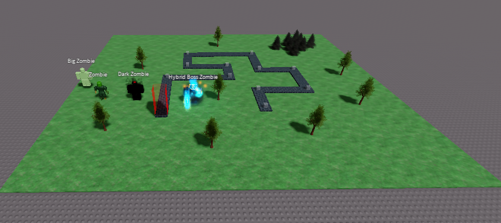

Some other Projects
In addition to my Projects in the Portfolio I have made many Projects.
Tower Defense in Unity
I created a prototype for a tower defense game in Unity, featuring a pathfinding system, modular maps, and multiple tower types with upgrade options. This project allowed me to dive into balancing mechanics, level design, and reusable systems for game logic.
Story Game in Godot
Together with a collaborator, I worked on a story-driven puzzle game in Godot. The main character could link minds with NPCs to solve challenges and progress through the story. Although the project ended early, it taught me the importance of having a clear Game Design Document to align vision and development.
Survival Town Building in Godot
I experimented with creating a survival-inspired town building game in Godot using hexagonal 3D models. I developed the upgrade system and terrain, but faced challenges with implementing a proper hexagonal grid. While the project remains unfinished, it gave me valuable experience with grid-based world design and Godot’s 3D workflow.
Scroller in Godot
As a small exploration of Godot, I developed a prototype for an endless scroller inspired by Subway Surfers. The game features procedurally generated maps that extend infinitely as the player progresses. This was a great exercise in procedural generation and game loop design.
Farm / Egg hatching Game in Roblox Studio
I explored Roblox Studio by creating a farm and egg hatching prototype. Players could earn currency, hatch eggs, and unlock animals that produced resources at faster rates. This helped me understand Roblox’s scripting environment and community-driven development.
Tower Defense Game in Roblox Studio
I attempted to build a tower defense game in Roblox Studio with a wave system and enemies. While development was limited by the platform’s restrictions, it was a useful experience in adapting design ideas to a very different game engine and workflow.